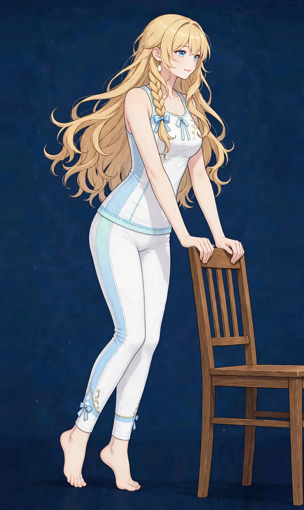

梅田で足首のラインケア｜美容整体で足首の見え方とふくらはぎにアプローチ｜ステラポラリス 梅田・女性専用美容・見た目

足首のくびれが見えにくい、ふくらはぎから足首までがまっすぐに見える——足首のラインは、脚全体の印象を締める細部の悩みです。むくみのページとは分け、ラインの見え方に絞って解説します。
足首のくびれはどう作られるか
足首のくびれは、ふくらはぎの筋肉の下部が細くなり、アキレス腱へ移る部分の陰影として表れます。くびれが見えにくくなる背景には、ふくらはぎの張り、足首まわりのむくみ、そして足首の関節の動きの硬さが関係します。
当店の「脚のむくみ」のページは、水分のたまり方による一日の変化を扱いますが、このページは、むくみが引いた状態でも気になる「ラインそのもの」を扱います。図1のように、ふくらはぎから足首までを一続きで眺めることが大切です。
足首のラインは、パンプスのストラップやブーツの履き口など、衣類との境界で特に目立ちます。気になる方は、靴を変えたときの見え方も比べてみてください。足首そのものの状態に加えて、ふくらはぎとの境目の見え方が印象を決めます。むくみの出やすい夕方と、引いている朝の両方で記録を残すと、自分のラインの素顔が見えてきます。
こんなサインはありませんか？ — 足首の太さ・ラインのチェックリスト
- 足首のくびれが見えにくい
- ふくらはぎからまっすぐに見える
- 足首が硬く、しゃがみにくい
- 夕方だけでなく朝から太く感じる
- ヒールを履くと足首が目立つ気がする
- 足の甲も一緒に厚く感じる
- 歩くと足首まわりが疲れる
- 靴のストラップが食い込む感じがする
当てはまる項目が多いほど、ふくらはぎの張りや足首の使い方に偏りが集まっている可能性があります。次の「要因」と見比べて、自分のパターンを確かめてみてください。
足首のくびれが見えにくい要因
- ふくらはぎの張り：ふくらはぎの下部まで張りが続くと、細くなる部分がなくなり、くびれは見えにくくなります。ふくらはぎのページと深く関連します。
- むくみの重なり：足首は水分がたまりやすい場所です。一日のむくみが、くびれを埋めて見せます。朝と夕方で見え方が変わる場合は、この影響が大きいサインです。
- 足首の関節の硬さ：足首の動きが硬いと、まわりの筋肉の働き方が偏り、巡りも滞ります。しゃがむ動作が苦手な方は、この影響が出ています。
- 足裏の使い方：足裏の支えが偏ると、足首の位置がずれ、ラインの見え方も変わります。外反母趾や内反小趾ともつながる土台です。
- 靴の影響：足首を固定する靴や、ストラップの食い込む靴は、巡りを妨げ、跡として残ります。靴の選び方もラインに関係します。
- 冷え：足首は冷えやすい場所で、冷えると巡りが滞り、むくみと硬さの両方が強まります。露出の多い季節も要注意です。
図1｜ふくらはぎから足首へのライン
東洋医学から見た考え方
東洋医学では、足首まわりには腎経・膀胱経・胆経・脾経など、下肢の経絡が集まるとされます。内くるぶしの下の照海、外くるぶしの上の懸鐘といったツボが並ぶ、巡りの要所です。
足首の見立てでは、ふくらはぎの張りと足首の動き、冷えの状態をあわせて眺めます。施術では、ふくらはぎから足首、足裏までを一続きでほぐし、巡りを助ける進め方を取ります。
代表的なツボ
足首のラインのケアでよく挙げられるツボを紹介します。くるぶしまわりは骨が近いため、強い圧は避け、指の腹でやさしく触れてください。
図2｜足首で見たいポイント

おすすめ施術
美容整体・オイルマッサージ
施術では、まずふくらはぎの張りをオイルマッサージでほぐし、足首まわりから足裏へと一続きでケアを広げます。そのうえで美容整体で、足首の関節の動きや足裏の使い方に触れながら、下半身全体のバランスを整えていきます。
足首のラインが整って見えるようアプローチするには、足首そのものだけでなく、ふくらはぎの張りと巡りを整えることが中心です。当日は、朝と夕方の見え方の違いも手がかりにうかがいます。
むくみが中心の場合は、脚のむくみのケアに配分を寄せることもできます。90分の中で、足裏から太ももまでを通してケアできるのが当店の進め方です。
自宅でできるセルフケア
足首のセルフケアは「動かす・ほぐす・冷やさない」の組み合わせが基本です。痛みやしびれが出る場合は無理をせず中止し、続く場合は医療機関にご相談ください。
- 1．足首回し足首を大きくゆっくり回す動きを左右10回ずつ。関節の動きを広げ、巡りを助ける基本のケアです。
- 2．ふくらはぎから足首へのなで流しお風呂上がりに、ふくらはぎから足首へ向けて手のひらでなでるケアを。張りをほぐしながら、くびれの部分を意識します。
- 3．かかとの上げ下げ壁に手をついて、かかとをゆっくり上げ下げを10回。ふくらはぎのポンプ作用で、足首まわりの巡りを助けます。
- 4．足首を冷やさない工夫靴下やレッグウォーマーで足首を覆い、冷えを防ぎます。冷えは、硬さとむくみの両方を強める要因です。
- 5．足首回しとタオルストレッチの手順椅子に座って片脚を少し浮かせ、つま先で大きな円を描くように、内回し・外回しを各10回ずつゆっくり回します。次に、床に脚を伸ばして座り、タオルの両端を持って足裏にかけ、膝を伸ばしたままタオルを手前へ引き、ふくらはぎから足首の後ろが伸びるところで20秒保ちます。左右2回ずつが目安です。どちらも入浴後に行うのがおすすめです。体が温まっている時間帯は関節や筋肉が伸びやすく、巡りも動きやすいため、無理のない範囲で続けやすくなります。
図3｜足首まわりのセルフケア

場面別の注意
ヒールやパンプスの日
足首が固定されやすい日は、帰宅後に足首回しとほぐすケアを。ストラップの跡が残る日は、特に巡りのケアが大切です。
むくみが強い日
くびれの判断は、むくみの引いた朝の状態で。夕方は巡りのケアを優先し、脚のむくみのページもあわせて実践してください。
しゃがむ動作が多い日
足首の硬さを感じる日は、お風呂で温めながら足首回しを。動きの硬さは、翌日のラインにも影響します。
受診の目安
次のような場合は、サロンでのケアの前に医療機関への受診をおすすめします。
- 足首の痛みや腫れが続いている
- 片脚だけ急に太くなった
- しびれや力の入りにくさがある
- 皮膚の色の変化やただれがある
- 捻挫など、けがのあとから痛みや腫れが続いている
当店は医療機関ではなく、診断は行いません。迷うときは、まずかかりつけの医療機関にご相談ください。
よくある質問
Q．「脚のむくみ」のページと何が違いますか？
あちらは一日の水分の変化による重さ、こちらは足首のラインそのものの見え方を扱います。むくみが主ならあちら、ラインが主ならこちらですが、当日は両方を見て配分を調整します。
Q．足首は細くなりますか？
サイズの変化をお約束するものではありません。ふくらはぎの張りや巡りが整うことで、くびれが見えやすく、ラインがすっきり見えるようアプローチするケアです。
Q．ふくらはぎの張りも一緒に相談できますか？
はい。足首のくびれは、ふくらはぎの張りと直結します。「ふくらはぎの張り」のページもあわせてご覧ください。
Q．足首が硬いのは生まれつきですか？
関節の形に個人差はありますが、使い方や張りで動きが硬くなっている部分もあります。施術では動きの状態を確認し、無理のない範囲でケアします。
Q．むくみが強い日とそうでない日で、足首の見え方が違うのはなぜですか？
足首は体の下の方にあり、水分がたまりやすい場所です。立ち仕事や座りっぱなしの時間の長さ、食事の塩分、気温、睡眠の状態などによって一日の巡りは変わるため、むくみの出方も日ごとに違います。むくみが強い日はくびれが埋まって太く見え、巡りのよい日はすっきり見える、という見え方の差が生まれます。状態を比べるときは、朝と夕方など、同じ時間帯で見比べることが大切です。片脚だけが急に腫れてきた場合は、ケアの前に医療機関への相談をおすすめします。
関連するお悩みページ
関連する経絡ページ
ご予約
ステラポラリス（大阪・梅田／女性専用）｜美容整体・オイルマッサージ 90分 10,000円｜月〜土 17:00〜22:00・完全予約制
ご予約はLINE公式アカウントで受け付けています。希望の日時と、気になる場所を送ってください。